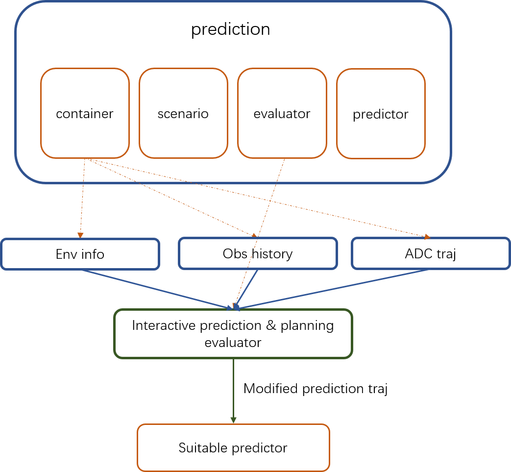

预测规划交互评估器
简介
预测模块主要由四个子模块组成，分别是： Container（信息容器）, Scenario（场景选择器）, Evaluator（评估器） and Predictor（预测器）。
评估器用于预测障碍物的速度和路径信息，通过给出路径置信度或短预测时域的轨迹信息，供后续的预测器进一步处理。评估器使用的模型文件存放在prediction/data/路径下。
预测规划交互评估器是针对交互障碍物设计的评估器，主要解决交互场景下（会车，狭窄道路，路口）障碍物预测问题，使用Vectornet和LSTM，考虑主车轨迹信息进行障碍物轨迹预测。

Where is the code
Code Reading
Interaction filter
Please refer interaction filter代码.
交互障碍物的获取是通过交互障碍物过滤器得到的，交互障碍物过滤器基于一定的规则筛选出与主车可能发生交互关系的障碍物。
这些障碍物将被添加上交互标签，用于触发交互预测模型。
void AssignInteractiveTag();
Model inference
模型使用的编码器是Vectornet，因此在调用模型进行轨迹预测前，需要将障碍物和地图信息组合成编码器需求的格式。